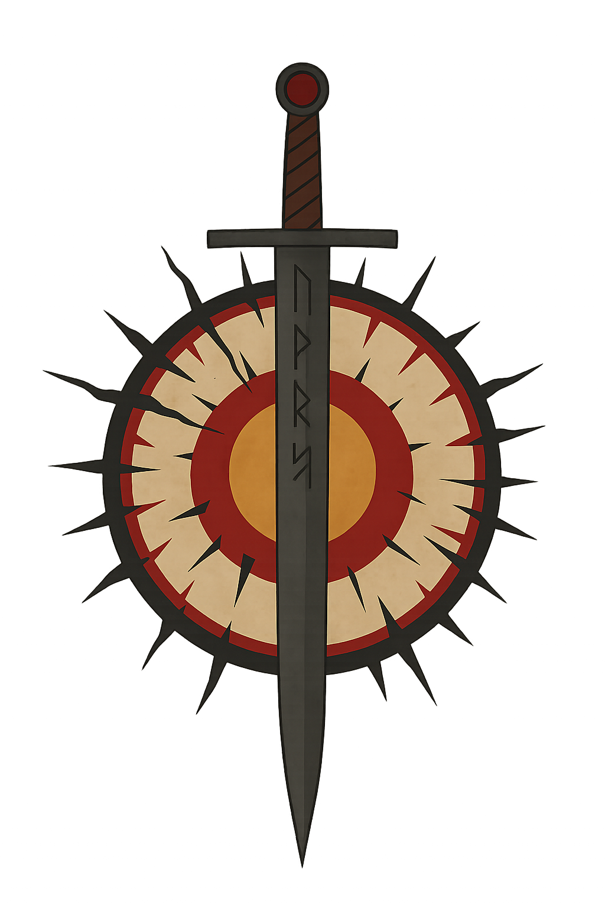
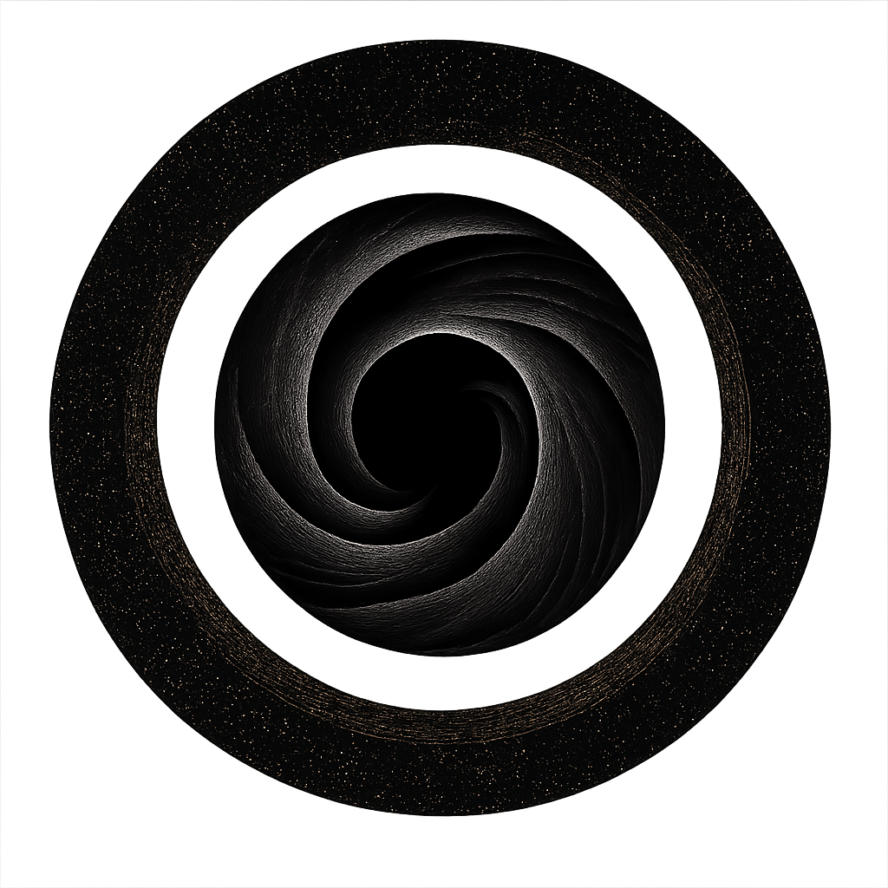

Dawn’s Purge
A zealot order of paladins, fighters, and inquisitors who believe magic itself corrupts the Weave. Their mission is to eradicate all magic users, including the Champion and Weaveborn. They view magical power as a threat that must be “cleansed.”
Symbol: A broken sun pierced by a sword.
Order of the Flame Unbroken
Loyalists to the Creator’s vision, this secretive order works to protect the Seal and assist the Champion. Their hidden cells operate in cities, often mistaken for harmless monks or religious zealots.
Symbol: An endless knot of flame.
Ascendant Circle
A powerful and enigmatic group of spellcasters who study the mysteries of the Weave. Feared and revered in equal measure, some within the Circle seek to control the Seal’s power, while others prepare for the Coming Unraveling.
Symbol: A spiral of stars surrounding a black void.
The Silent Loom
Type: Secretive intelligence network
Focus: Surveillance, prophecy interpretation, and containment of dangerous truths
Formerly the Quiet Weft. They monitor Weave disturbances and eliminate threats before they spread. Their agents are informants, spies, and keepers of forgotten prophecy—aware of the Seal’s weakening and Kaelen Vorr’s return.
Symbol: A loom with one broken thread.

The Shattered Sigil
Type: Rebel sorcerers and warlocks
Focus: Freedom from divine or arcane control
Threadmarked rebels who reject divine oversight and structured magic. They dwell in the Shardlands and Vael’Ashai, defying kingdoms that outlaw uncontrolled Weave use.
Symbol: A cracked rune circle surrounded by floating shards.

The Obsidian Concord
Type: Mercantile alliance and smuggler guild
Focus: Trade in relics, forbidden artifacts, and Weave-touched goods
A pragmatic coalition of merchants and mercenaries who profit from chaos. They deal in relics and information, selling to any side if the coin is right.
Symbol: A black coin split by a silver line.

The Woven Blades
Type: Knightly order / mercenary company
Focus: Physical mastery of the Weave through discipline and steel
Elite warriors who channel Weave energy into combat. Precursors to Threadbound Vanguards. Motto: “The pattern cuts both ways.” Loyal to balance, not nations.
Symbol: Two crossed blades wrapped in thread.

The Hollow Forge
Type: Industrial and artificer guild
Focus: Crafting through corrupted or fractured Weave energy
Inventors who revere the Forge’s curse as a lesson in hubris. They believe progress must be tempered by sacrifice. Origin myth includes the “Steeled Against Greed” blessing.
Symbol: A cracked anvil with glowing veins.

The Eclipsed Choir
Type: Religious cult
Focus: Worship of the Dark One through harmony and silence
They see silence and shadow as purity, claiming the Creator’s light blinds mortals to truth. Their hymns are wordless, and leaders commune through echoes in the Weave.
Symbol: A crescent eclipse with radiating full moon.

The Threaded Veil
Type: Scholarly and mystical order
Focus: Study of reincarnation, echoes, and the Threadmarked
Neutral observers who collect memories and past-life testimonies. Sometimes aid reincarnated adventurers, sometimes manipulate them for prophecy’s sake.
Symbol: A single eye behind a lattice of thread.

The Dawnsworn Compact
Type: Diplomatic coalition of kingdoms and churches
Focus: Maintaining fragile peace and preventing another Breaking
Born from fear of war. Sponsors the Flame Unbroken and Woven Blades, but secretly feuds with the Ascendant Circle over magical regulation.
Symbol: A radiant sun encircled by twelve stars.

The Fractured Crown
Type: Exiled nobility and usurpers
Focus: Reclaiming lost thrones and rewriting the pattern
Fallen dynasties who believe restoring “true bloodlines” will mend the Weave. Many are cursed, corrupted, or allied with the Dark One’s followers.
Symbol: A golden crown shattered into three jagged pieces, with a broken crimson thread weaving through the cracks.